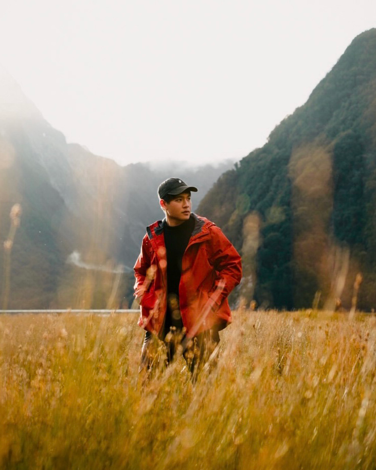

When I'm away from the desk...
You can probably find me doing freelance photography, daydreaming outdoors on a hike, diving, camping, or traveling—or just grabbing coffee with my friends at our favorite cafes. And occasionally... you'll find me back at my desk, catching up on my favorite movie with a window cracked open.